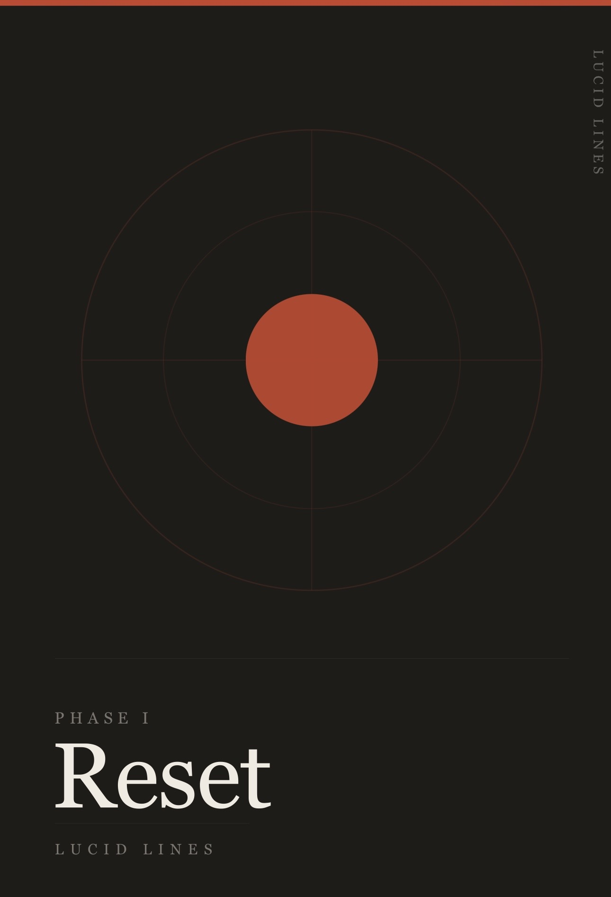
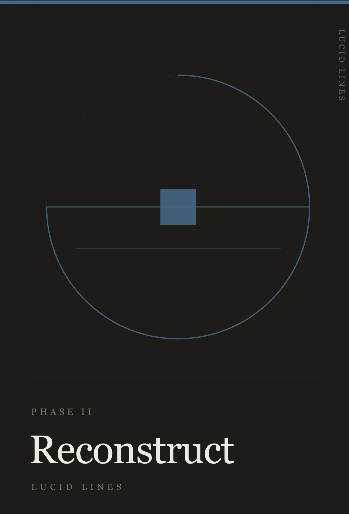
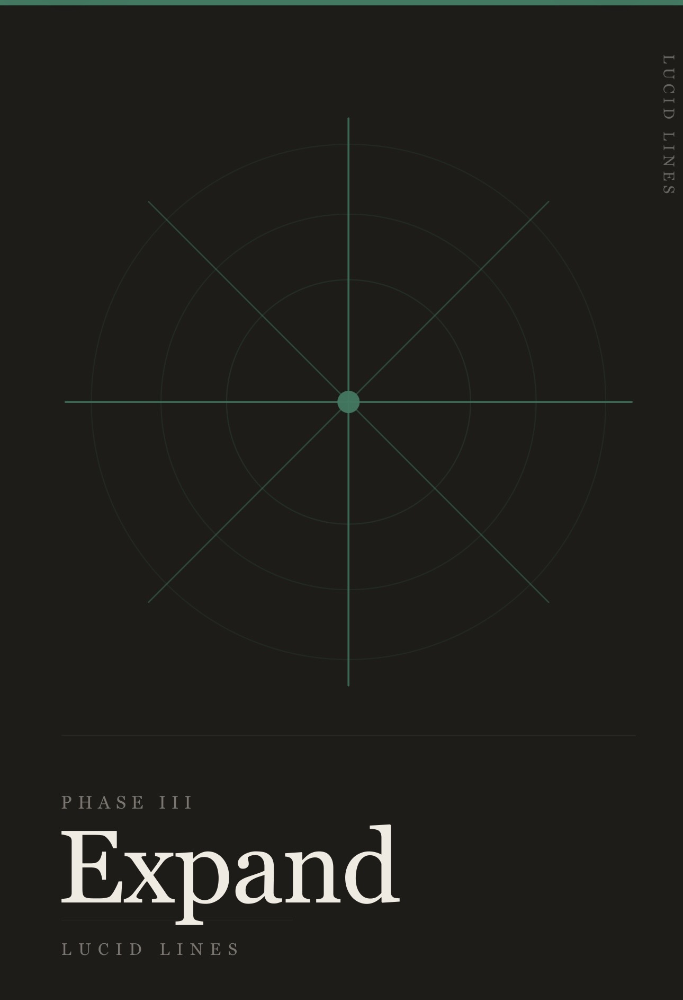

Mental
Attention, discernment, learning and independent thought.
Independent research · Practical ideas · Useful connections
The world is changing. How do we adapt well — without losing what matters?
Lucid Lines investigates the ideas, practices and real-world solutions that help people and communities navigate change with clarity, agency and care.
01 / Explore
Follow the research ↗First investigation / In development
From hotter, drier summers to sudden downpours, we look beyond the headlines to understand what is changing, where everyday life intersects with it, and which responses are worth testing.
Explore the approach ↗02 / Four lenses
Attention, discernment, learning and independent thought.
Regulation, relationships, uncertainty and courage.
Health, movement, food and embodied resilience.
Home, land, neighbourhoods and the systems we inhabit.
03 / Solutions
Research is a beginning, not an endpoint. Lucid Lines looks for credible, practical responses — from household changes and community projects to businesses developing better ways to live and work. The aim is to make useful solutions easier to understand, assess and find.
Investigate the problem, examine the evidence and ask what a proposed solution can realistically achieve.
Understand where the issue touches everyday life — at home, in a business, on the land or in a community.
Explore what works, what it costs, what gets in the way and what others could reasonably adapt.
The solutions network is being developed. Recommendations will be evidence-led, with commercial relationships made clear.
04 / Practice
Tools for everyday change


Practice / 001
A 90-day structured practice for moving consciously through change.
Three volumes — Reset, Reconstruct and Expand — designed to support clarity, self-knowledge and agency through reflection, inquiry, practice and integration.
“Change is not a problem to be solved. It is a passage to be moved through.”
Secure checkout powered by Stripe.
05 / Library
Research & reference
Books, reports, datasets, thinkers and tools behind the investigations — so readers can follow the evidence and make up their own minds.
Technology & agency
We explore how technology can expand human capability without quietly replacing the thinking, making and deciding that keep those capabilities alive.